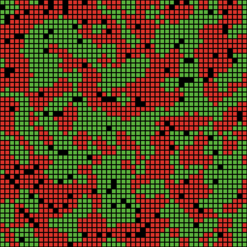

Что такое модель Шеллинга?
Модель Шеллинга - это известная модель, описывающая процесс сегрегации.
Была придумана американским экономистом Томасом Шеллингом в 1970-х годах.
В то время в США было распространено такое явление, как гетто.
Шеллинг наблюдал за этим процессом, и в результате пришел к выводу,
что "черные" районы образуются не из-за поголовной вражды людей разного цвета кожи,
а из-за того, что люди отдают предпочтение тому месту проживания,
где его соседями будут похожие на него люди. В результате все расселяются
рядом с себе подобными и все счастливы.
Модель Шеллинга, отражающая этот процесс, очень проста:
перед нами поле, разбитое на N x N клеток. Каждая клетка
либо пуста, либо занята агентом с определенным цветом кожи.
Если у агента соотношение числа соседей с его цветом кожи
к числу всех соседей меньше некоторого порога, то агент
переезжает на любую пустую клетку. В результате действия таких
простых правил образуется тотальная сегрегация.
В силу того, что вопросы цвета кожи утрачивают свою
былую актуальность, модель все чаще используется не для
описания поведения людей разного цвета кожи, а для
описания поведения представителей разных конфессий, языков,
увлечений и т.д.

Недостатки модели Шеллинга
К сожалению, даже у столь чудесной модели есть
серьезные недостатки:
1. Важнейшим недостатком можно назвать отсутствие какой
бы то ни было ассимиляции. Если человек окружен иноязычными
соседями, то ему легче выучить их язык, чем сменить место
жительства.
2. В современном мире влияние на принятие человеком
решений оказывают не только физические соседи, но и интернет.
Таким образом, у человека должны быть так называемые интернет-соседи.
3. На действия человека влияют также его личные качества или
качества, присущие людям его группы, например упорство или толерантность. Но в классической модели они
попросту отсутствуют.
Эти три недостатка делают классическую модель Шеллинга менее
актуальной в наши дни. Тем не менее, сама идея подобной модели
очень проста и интересна, и она нуждается в новой реализации.
Модификации модели Шеллинга
У каждого цвета кожи свой уровень толерантности
Густота и разнообразие
Моя модификация модели Шеллинга
Созданная мною модификация модели Шеллинга отличается тем, что каждая клетка характеризуется не одним параметром - цветом, а тремя параметрами - цветом, интернет-сообществом и упорством.